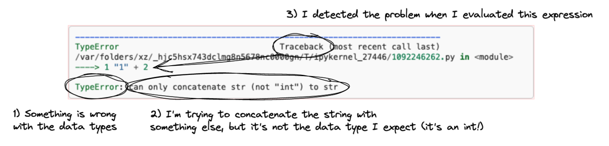

2a: Expressions
Contents
2a: Expressions#
Learning goals:#
Recognize Python expressions
Recognize different data type literals
Recognize what operators are used for the appropriate data types
Recognize TypeErrors and common fixes
What are Expressions?#
Expressions are a basic building block of programs. They are chunks of Python code that evaluate to (yield) some value.
Here are a simple few examples.
What is 1 added to 1?
1 + 1
2
What is 3 multiplied by 2?
3 * 2
6
Is 3 larger than 2?
3 > 2
True
Here’s one that includes multiple expressions
3 * 2 + 5
11
So far, you may recognize these as basically math. That’s good! There’s a good amount of overlap between the concept of expressions and what you remember from math.
Now let’s stretch that prototypical example a bit. Keeping in mind that expressions are chunks of Python code that evaluate to (yield) some value, these are also expressions:
Is 3 the same as 3?
3 == 3
True
And even this: Evaluate the literal value 1
1
1
And of course, our most classic “hello world” in Python:
print("Hello world!")
Hello world!
One heuristic you can use to tell if a chunk of code is an expression or not, is to test or imagine it being the last line in a cell; if it yields an output by itself, then it’s an expression.
Anatomy of an expression#
An expression is built from, at minimum a value.
Like 3, or (as we will later see), a variable that holds a value.
Often, it also includes an operator that does something with the value(s).
Like > or +.
So, in:
3 + 1
The values are 3 and 1
and the operator is + (addition).
Types of operations#
There is a full list of operators here (bookmark this!). But for this module, the main ones to focus on are
Arithmetic operators (for doing math):
+ - * / %Concatenation operator (for joining
strvalues)+Comparison operators (yield
booleanvalues, used for conditionals)Logical operators:
andornot(yieldbooleanvalues, used for conditionals)
Let’s look at some examples together.
Arithmetic operators#
1 - 3
-2
Concatenation#
"1" + "1"
'11'
Comparison operators#
These can work with most/any data types. But the result may not always be what you expect!
"A" != "a"
True
Logical operators#
These are for logical expressions. You’ll find them to be most useful when you work with conditionals
a = 5
a < 10 and a % 2 != 0
True
Compound expressions#
We can build expressions from values that are… the results of expressions.
We know we can do this with math.
# value on the right is the *result* of the expression 1 + 2
3 * (1 + 2)
9
And it’s also common with logical expressions, which are often built from comparison expressions
# is 3 greater than 2 and less than 10?
# this will make more sense when we use variables :)
3 > 2 and 3 < 10
True
Values have types#
To work with expressions and perform operations on them, Python needs to know what type of data they are.
Here are some basic types of data that Python knows out of the box:
str- strings, expressed with single quotes'a'or double quotes"a"(Python doesn’t differentiate)int- integer numbers (i.e., no decimals), like3. For doing math.float- floating point numbers (i.e., with decimals), like3.0. For doing more precise math.boolean- True or False values. Important for creating logical structures in your programs (like conditionals).
There are (many!) more types of values (including more complex data structures, such as lists, dictionaries, and data frames), but these will be sufficient for at least Module 1.
When we give these values to Python by themselves (not in a value), we call them literals. Let’s look at some examples.
# this is an int
1
# this is a float
1.0
# this is a string
"1"
# this is also a string
"True"
# this is a boolean
True
Notice how the syntax highlighting helps us recognize the different literals. Generally, for systems that do syntax highlighting for Python:
intandfloatare greenstringsare red (as long as they are in quotation marks!)and
booleansare bold and green.
This color coding can help you manage data types.
Let’s practice a little!
Q: What data type is this? Guess and then reveal to check your answer.
3
Answer:
int!
Q: What data type is this? Guess and then reveal to check your answer.
"3"
Answer:
str (string)!
Q: What data type is this? Guess and then reveal to check your answer.
"65"
Answer:
str (string)!
Q: What data type is this? Guess and then reveal to check your answer.
65
Answer:
int!
Q: What data type is this? Guess and then reveal to check your answer.
"True"
Answer:
str (string)!
Q: What data type is this? Guess and then reveal to check your answer.
True
Answer:
boolean!
Types are super important, because as we will see next, value types constrain what kinds of operations are valid.
Value types constrain operators#
As we saw, most commonly, expressions are built from a combination of values and some operators that do something with the values. The values in the expression constrain what kinds of operations are valid.
Let’s look at an example. Can you predict what the output of this expression will be? Guess then reveal the output.
1 + 2
3
What about this? Can you predict what the output of this expression will be? Guess then reveal the output and the explanation.
"1" + "2"
'12'
Explanation:
The + here is not addition, but concatenation because the data values here are both strings.
And this? Can you predict what the output of this expression will be? Guess then reveal the output and the explanation.
"1" + 2
Explanation:
You should see an error message! Python doesn’t know what to do here, because one of the values is a str (which means the + is concatenation) and the other is an int (which means the + is addition)! More on this in the next section.
Aside: your first bug!#
The TypeError#
Congratulations, you have just encountered your first bug!
When we try to write an expression that creates an invalid combination of operators and values, we get a TypeError error message.
Let’s unpack this error message a bit
{kind=link}
Here, Python is telling us:
That there’s something wrong with data types here
It’s something to do with trying to concatenate a string with something else, and failing because it’s an int instead of a string
It’s somewhere around the
"1" + 2expression
These three parts are generally what you look for in an error message to help you figure out what to do to fix what’s going on:
What type of thing went wrong (this helps narrow the range of potential problems/fixes)
A bit more about what went wrong (often helpful, but sometimes not, depending on how much you know and how helpful the programmers who wrote the error messages are!)
Where the problem was detected (which may not be where the problem actually is!)

The bottom bit (type of error (1) and description (2)) is helpful for Googling for fixes. The traceback (3) helps you find the part in your code that might be causing an error.
The (silent) type error#
These error messages can be annoying! But they’re helpful: this is Python helping us catch bugs before the code runs!
Unfortunately, we can make mistakes with the values in a way that fails silently, without these error messages.
For example, if you want to add 1 and 2, and write:
"1" + "2"
'12'
This is valid code! And it runs and produces output! But it’s not what you want.
In this course, we’ll call this sort of error a semantic error: it’s a mismatch between what you want Python to do, and what you actually told Python to do (which is exactly what it did). This is different from the syntax error in the previous example (which prevents the code from executing/finishing, and yields an error code). We’ll discuss debugging in more detail in the next module, but for now, just be aware that bugs can be silent like this. The key idea, which we will expand on later, is to always be mindful of the (potential) difference between 1) what you want to happen, and 2) what Python actually does, which is what produces the output you can see/inspect.